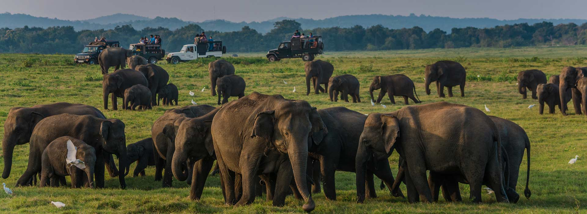
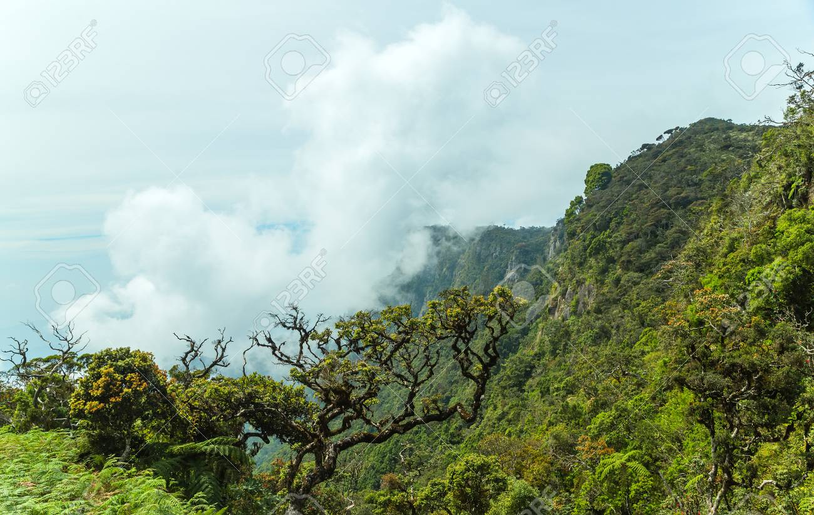

Wonders of Sri Lanka Wild Life
Sri Lanka is renowned for its exceptional biodiversity, with a wide array of ecosystems and a high percentage of endemic species. The country's diverse ecological zones, ranging from the "wet zone" to the "dry zone," contribute to its rich wildlife population. Sri Lanka is home to a remarkable variety of flora and fauna, including 4000 species of flowering plants, 107 species of freshwater fish, 59 species of amphibians, 174 species of reptiles, 435 species of birds, 140 species of mammals, and several thousand invertebrates. The country's unique biological diversity is facing various threats, including habitat loss, pollution, invasive species, overexploitation, and climate change. Despite these challenges, Sri Lanka remains a paradise for wildlife enthusiasts, offering opportunities to experience diverse wildlife in its numerous national parks and reserves. The wildlife of Sri Lanka is a testament to the country's rich biodiversity, with a high concentration of endemic species and a wide range of ecosystems. From the lush rainforests to the diverse coastal marine life, Sri Lanka's natural heritage is a treasure trove for nature lovers. The country's efforts to conserve its wildlife in the face of various threats reflect a commitment to preserving this unique and irreplaceable natural heritage.
Rainforests

Sri Lanka is home to a variety of ecosystems, and while it doesn't have the extensive rainforests that some other tropical regions boast, it does have areas of lush, diverse vegetation that can be considered rainforest-like. The Sinharaja Forest Reserve, located in the southwest of the country, is one such area and is a UNESCO World Heritage Site. Sinharaja is the last viable area of primary tropical rainforest in Sri Lanka, and it harbors a rich biodiversity with numerous endemic species. The forest is home to a variety of flora and fauna, including unique bird species like the Sri Lanka blue magpie and the red-faced malkoha. Additionally, various mammals, amphibians, reptiles, and insects contribute to the area's ecological significance. Conservation efforts are in place to preserve the Sinharaja Rainforest and its biodiversity, recognizing its importance in maintaining the ecological balance and safeguarding endemic species. Visitors to Sinharaja have the opportunity to explore its trails and appreciate the beauty and ecological significance of this unique rainforest environment.
Some Special Facts About Rain Forests In Sri Lanka
- Found in the wet zone of southwest Sri Lanka
- Characterized by high annual rainfall (over 2,500 mm)
- Dominant tree species include Mesua ferrea, Doona gardneri, and Dipterocarpus species
Dry Forests

Dry forests in Sri Lanka, primarily located in the northern and northwestern regions, constitute a distinctive ecological niche within the country's diverse landscape. Characterized by prolonged dry periods during the seasonal cycles, these forests showcase a remarkable array of flora and fauna adapted to thrive in semi-arid conditions. Drought-resistant tree species, thorny shrubs, and deciduous vegetation dominate the landscape, strategically shedding leaves to conserve water during arid spells. Despite the challenging environment, dry forests harbor a rich biodiversity, featuring unique bird species, mammals, reptiles, and insects that have evolved to endure and flourish in these conditions. Human communities often intersect with these ecosystems, relying on them for resources such as firewood and traditional medicinal plants. Balancing the needs of local populations with conservation efforts is crucial, as dry forests face threats from deforestation, habitat degradation, and the impacts of climate change. Conservation initiatives, including sustainable management practices and community involvement, are essential to ensure the preservation of these ecosystems. Moreover, recognizing the potential for eco-tourism in certain areas provides an avenue for appreciating the unique attributes of Sri Lanka's dry forests while supporting their conservation.
Some Special Facts About Dry Forests In Sri Lanka
- Found in the dry zone covering north, southeast, and eastern Sri Lanka
- Receive rainfall below 1,750 mm annually, with a dry season
- Dominated by thorny vegetation and trees like palu (Manilkara hexandra)
- Elephants, sambar deer, black-naped hares inhabit these forests
Montane Forests
Montane forests in Sri Lanka, nestled within the central highlands at elevations exceeding 1,000 meters, stand as remarkable ecosystems shaped by unique climatic conditions. Characterized by cooler temperatures and increased precipitation compared to lowlands, these forests, found in areas like the Knuckles Mountain Range and Horton Plains, exhibit a distinct flora and fauna. The stunted and gnarled trees, along with a diverse array of mosses, ferns, and endemic flowering plants, contribute to the intricate tapestry of montane vegetation. Endowed with biodiversity hotspots, these forests house endemic bird species, mammals, and insects that have evolved in isolation at higher altitudes. Beyond their ecological richness, montane forests play a vital role in water regulation, serving as crucial water catchment areas for rivers and streams originating in these elevated regions. Conservation efforts are paramount, given the threats posed by human activities such as agriculture and logging, emphasizing the need to safeguard these delicate ecosystems. Accessible to tourists and researchers, these montane forest areas offer opportunities for exploration and study, promoting both awareness and support for the preservation of their unique and fragile ecology. In essence, the montane forests of Sri Lanka stand as testament to the island's biodiversity and underscore the importance of conservation in maintaining the ecological balance of these high-altitude environments.
Some Special Facts About Montane Forests In Sri Lanka
- Found above 1,500 m altitude in the central highlands
- Lower temperatures than lowland forests
- Endemic birds like Sri Lanka white-eye and Dull-blue flycatcher live here
- Many threatened mammals like Horton Plains slender loris inhabit these forests
Interesting Facts About The Bio Diversity In Sri lanka
- There are over 3,700 wild elephants in Sri Lanka
- Sri Lanka has the highest density of leopards in the world
- Over 33% of Sri Lanka's land area is wildlife reserves
- Yala National Park is the most visited park in Sri Lanka
- Wilpattu National Park is the largest national park in Sri Lanka
- Horton Plains National Park hosts many endemic species